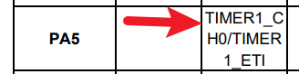
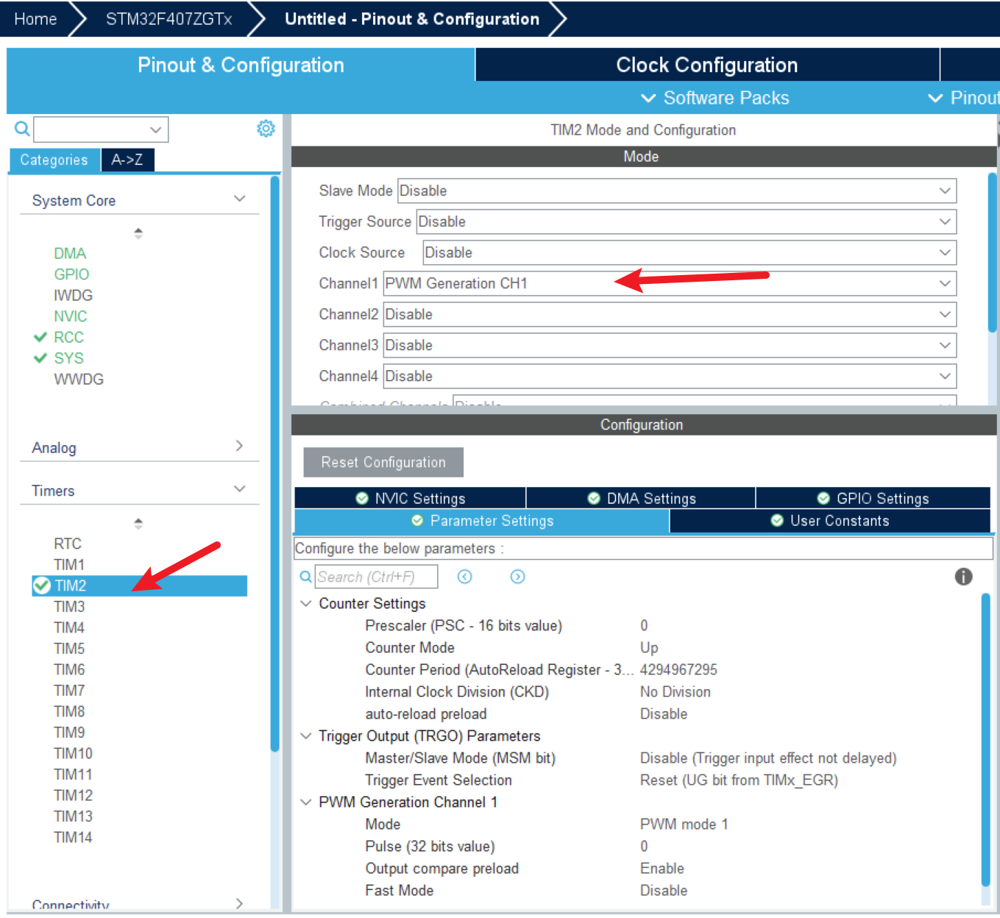
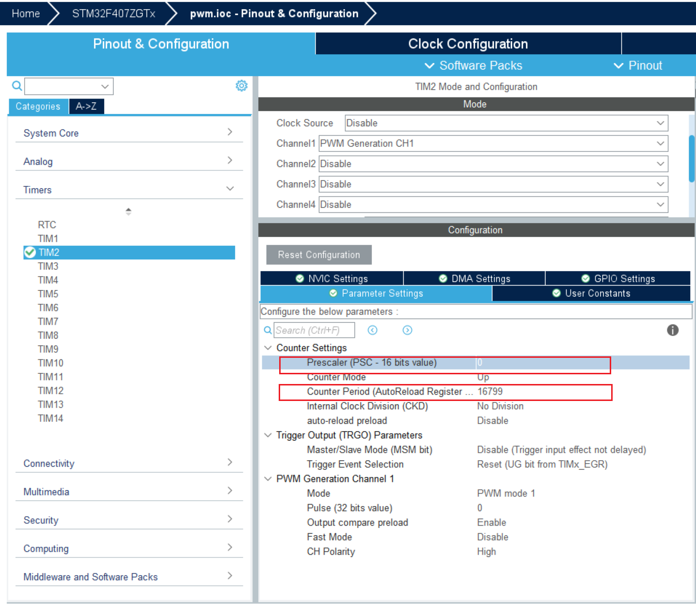
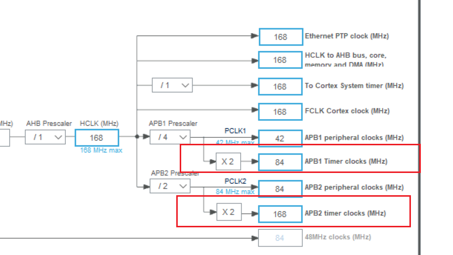

<!DOCTYPE lake>
<h2 data-lake-id="tb8Nn" id="tb8Nn"><span data-lake-id="ub35066a7" id="ub35066a7">学习目标</span></h2><ol list="u7f21f99f"><li data-lake-id="uf5f09f01" fid="ub3076963" id="uf5f09f01"><span data-lake-id="u31a9a7e4" id="u31a9a7e4">掌握定时器I配置方式</span></li><li data-lake-id="ub875b642" fid="ub3076963" id="ub875b642"><span data-lake-id="u263a62d6" id="u263a62d6">掌握定时器占空比输出</span></li></ol><h2 data-lake-id="p7ES6" id="p7ES6"><span data-lake-id="ue25ea49f" id="ue25ea49f">学习内容</span></h2><h3 data-lake-id="aEwNk" id="aEwNk"><span data-lake-id="u5f127edb" id="u5f127edb">需求</span></h3><p data-lake-id="ue6e6022b" id="ue6e6022b"></p><p data-lake-id="u41ed8fbf" id="u41ed8fbf"><span data-lake-id="ub350dd8f" id="ub350dd8f">以</span><code data-lake-id="u570838b3" id="u570838b3"><span data-lake-id="u2f24deac" id="u2f24deac">PA5</span></code><span data-lake-id="uee4f5009" id="uee4f5009">对应的LED4为例，我们做一个呼吸灯的效果。</span></p><p data-lake-id="udac276a1" id="udac276a1"><span data-lake-id="u760fa345" id="u760fa345">我们采用TIMER1进行实现：</span></p><p data-lake-id="u8158b878" id="u8158b878"></p><h3 data-lake-id="mssWE" id="mssWE"><span data-lake-id="ue9764997" id="ue9764997">Timer配置</span></h3><p data-lake-id="ua7c11350" id="ua7c11350"><span data-lake-id="u942f5fa7" id="u942f5fa7">配置Timer通道输出</span></p><p data-lake-id="u9bbb2815" id="u9bbb2815"></p><p data-lake-id="u1cf7e0d5" id="u1cf7e0d5"><span data-lake-id="u0866a223" id="u0866a223">配置周期和分频计数</span></p><p data-lake-id="ud4ae3d5c" id="ud4ae3d5c"></p><ul list="uef3ac403"><li data-lake-id="u829807ae" fid="u17dd7288" id="u829807ae"><span data-lake-id="u75e55e6c" id="u75e55e6c">psc为分频系数，这里的值需要写入到寄存器中的</span></li><li data-lake-id="u1f5adab6" fid="u17dd7288" id="u1f5adab6"><span data-lake-id="u0f374de5" id="u0f374de5">period为周期计数，这里的值需要写入到寄存器中的</span></li></ul><p data-lake-id="u534041b6" id="u534041b6"><span data-lake-id="u699ded32" id="u699ded32">这里再引入一个点，系统时钟和Timer自己的时钟，系统时钟是系统主频，Timer自己有自己的主频，这个之间存在一个比值。系统主频为168MHZ， Timer2的主频为42MHZ，差值为4倍。标准库提供了倍频方案，HAL库没有，因此计算时，我们需要加入这个因素。</span></p><p data-lake-id="uabd7cec8" id="uabd7cec8"><span data-lake-id="u411c89fb" id="u411c89fb">例如：希望 1秒钟执行100次，通常解决思路如下：</span></p><p data-lake-id="u2e0b125d" id="u2e0b125d"><a class="yuque-card-link" href="https://cdn.nlark.com/yuque/__latex/e5bbee3b2b48a6635fa63a5163c5324d.svg" rel="noopener noreferrer" target="_blank">math：math</a></p><p data-lake-id="ufbc19019" id="ufbc19019"><span data-lake-id="u709b7cd3" id="u709b7cd3">但是计数值不可以超过65535，需要做分频：</span></p><p data-lake-id="ud190d623" id="ud190d623"><a class="yuque-card-link" href="https://cdn.nlark.com/yuque/__latex/94462d670303070e58084012a0e27b9d.svg" rel="noopener noreferrer" target="_blank">math：math</a></p><p data-lake-id="ub4ed11b3" id="ub4ed11b3"><a class="yuque-card-link" href="https://cdn.nlark.com/yuque/__latex/47af2e5e7bc8a8096c4e6510275e48d9.svg" rel="noopener noreferrer" target="_blank">math：math</a></p><p data-lake-id="ubc7dc6ff" id="ubc7dc6ff"><span data-lake-id="ucc738947" id="ucc738947">表达的意思是100秒执行10000次，也就是1秒钟执行100次</span></p><p data-lake-id="u037421bb" id="u037421bb"><span data-lake-id="uee056e41" id="uee056e41">​</span><br/></p><p data-lake-id="u377413cd" id="u377413cd"><span data-lake-id="ud396d708" id="ud396d708">但是在这里还要注意一个倍频的问题，当前Timer2存在2倍差距。这里100秒执行10000次，就变成了200秒执行10000次。所以，倍频方面需要再次做处理。</span></p><p data-lake-id="u4ded015e" id="u4ded015e"></p><p data-lake-id="uf6d438aa" id="uf6d438aa"><a class="yuque-card-link" href="https://cdn.nlark.com/yuque/__latex/94462d670303070e58084012a0e27b9d.svg" rel="noopener noreferrer" target="_blank">math：math</a></p><p data-lake-id="u77882b82" id="u77882b82"><br/></p><p data-lake-id="u90aa6194" id="u90aa6194"><a class="yuque-card-link" href="https://cdn.nlark.com/yuque/__latex/48fcac7d8e396d6ffa2b452cb10a4793.svg" rel="noopener noreferrer" target="_blank">math：math</a></p><p data-lake-id="ucc1e2344" id="ucc1e2344"><br/></p><p data-lake-id="u0f68777c" id="u0f68777c"><span data-lake-id="u39e84465" id="u39e84465">因此，如果要做到1秒执行100次，那么</span></p><p data-lake-id="u117e329d" id="u117e329d"><a class="yuque-card-link" href="https://cdn.nlark.com/yuque/__latex/738d7f8044ee34e703949a8ed0a064f1.svg" rel="noopener noreferrer" target="_blank">math：math</a></p><p data-lake-id="ucaf11bd6" id="ucaf11bd6"><br/></p><p data-lake-id="u146e9ae0" id="u146e9ae0"><a class="yuque-card-link" href="https://cdn.nlark.com/yuque/__latex/ebeaf3d48f5fd266f97330e495de1e6a.svg" rel="noopener noreferrer" target="_blank">math：math</a></p><p data-lake-id="u0576e611" id="u0576e611"><br/></p><h3 data-lake-id="Iqi4V" id="Iqi4V"><span data-lake-id="ud8f6ca87" id="ud8f6ca87">Timer编码</span></h3><p data-lake-id="u099ed609" id="u099ed609"><span data-lake-id="ub2dde5f0" id="ub2dde5f0">提供PWM更新的API</span></p><span class="yuque-card-unsupported">[codeblock]</span><p data-lake-id="u94e194cd" id="u94e194cd"><br/></p><h2 data-lake-id="lniBL" id="lniBL"><span data-lake-id="u214ed71b" id="u214ed71b">练习题</span></h2><ol list="udd2022c6"><li data-lake-id="u10d155cf" fid="u4e9c35dc" id="u10d155cf"><span data-lake-id="u345915dd" id="u345915dd">测试PWM占空比</span></li></ol>